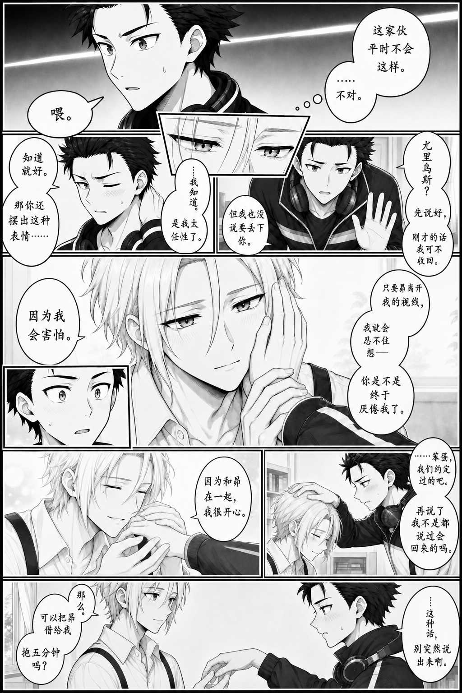
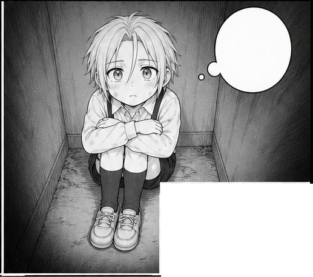
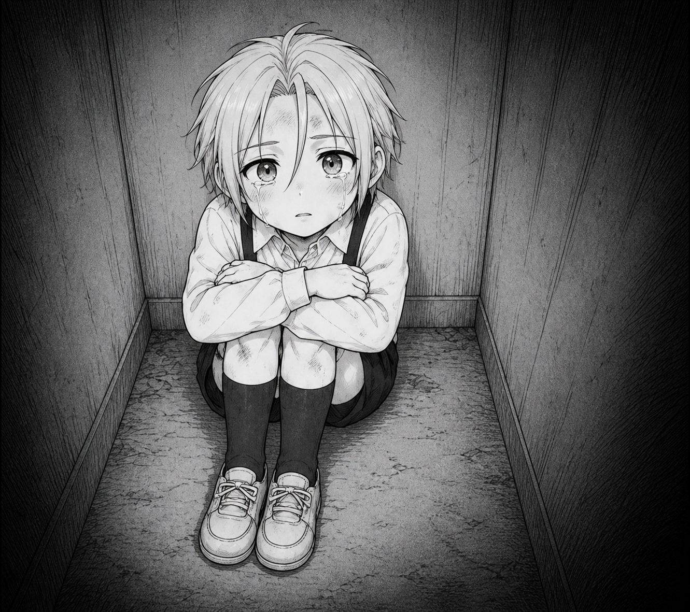
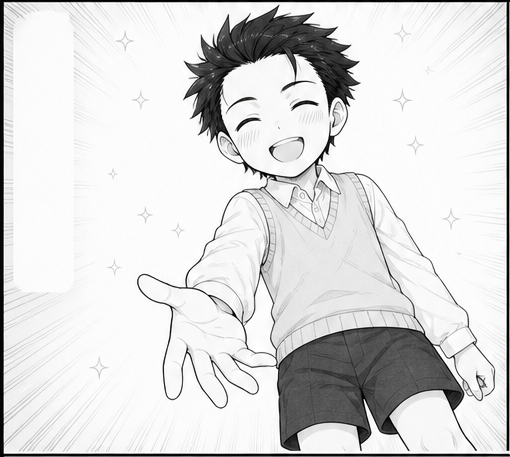
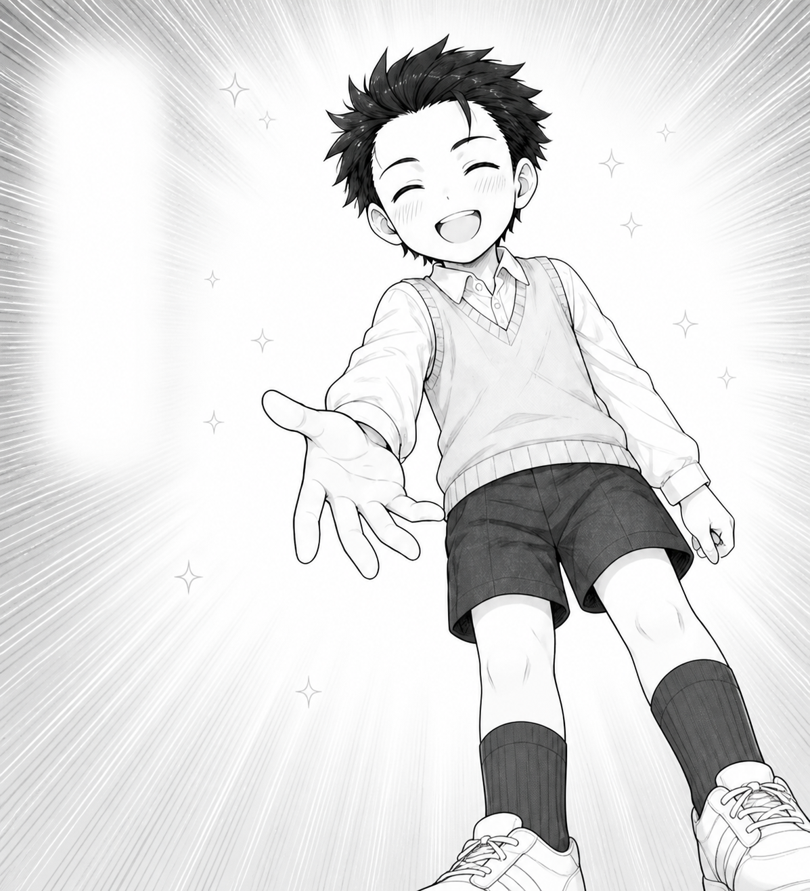
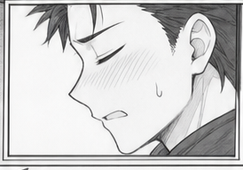
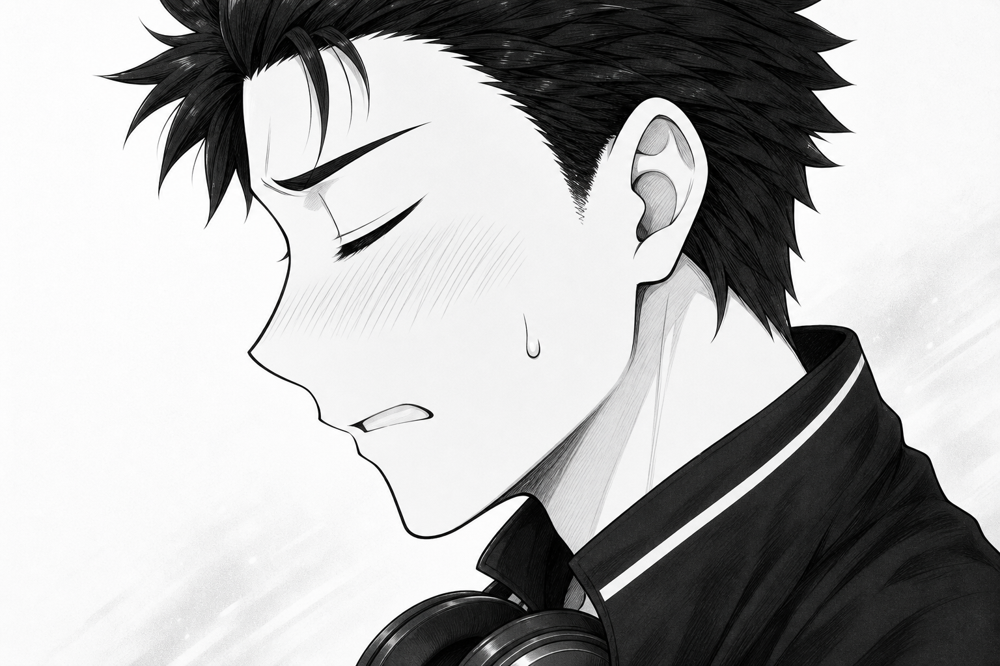
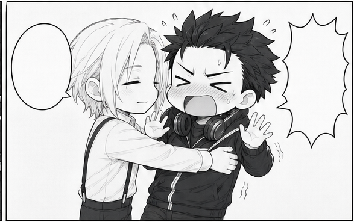
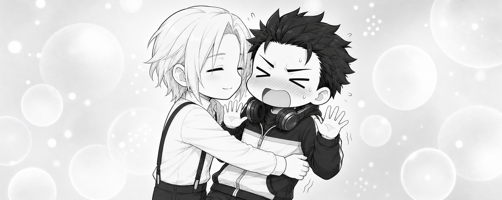

Designing the Panels
Finished page previews
| Page example 1 | Page example 2 |
|---|---|
 |
 |

This chapter shows how a shot description becomes a visual guide and then a page framework. Specify acting and camera placement, confirm the reading order and space for text, and begin drawing.
Historical excerpts below are translated into English. Expand each Chinese original for comparison. Newly prepared templates are labeled separately.
1. Describe the intended shot
The creator first describes each panel in words. Two actual request excerpts show how to specify character placement, action, expression, and camera angle.
Close interaction · English translation:
U01 should show Subaru's shyness and Julius's intense anticipation, focusing on their upper bodies. Subaru occupies the right half, his body facing left while his head turns right. His cheeks are lightly flushed, with a bead of sweat from embarrassment. He scratches his cheek with his left index finger, looking slightly nervous.
Chinese original
U01主要用来描绘昴有点害羞和尤里乌斯欲望拉满的张力情景，镜头主要是昴和尤里乌斯的上半身。昴整体在分镜右半边，昴身体朝左边，但是头偏向右边，脸颊微红，还有一滴因为害羞而出现的汗。昴的左手的食指挠着脸颊，一副有点紧张的样子。
Embrace · English translation:
Julius wraps his arms around Subaru's waist and buries his head against Subaru's chest, with half his profile visible. His eyes are closed, his cheeks lightly flushed, and he looks content. Subaru strokes Julius's head with one hand; his cheeks are much redder, but his expression is resigned. Julius remains on the left and Subaru on the right. The camera looks down from the side at about 45 degrees.
Chinese original
尤里乌斯环住昴的腰肢，把头埋进昴的怀里去感受昴的气息，露出一半侧脸，尤里乌斯这时候是闭着眼睛的，脸颊微红，但是一脸享受的样子。而昴就单手抚摸着尤里乌斯的头，脸颊很红，但是表情很无奈。该分镜依然是尤里乌斯在左边，昴在右边，镜头从上斜着往下45度从侧面方向拍摄这个画面。
The first description separates the body's direction from the head's direction and uses cheek scratching to express embarrassment. The second describes the waist embrace, head pat, and high camera angle together. These details define what later redraws must retain.
2. Discuss action and text placement
ChatGPT checks speaker identity, action continuity, and reading order, then organizes them into reviewable requirements.
Historical reply excerpt · English translation:
This keeps the speakers clear and supports right-to-left reading.
Chinese original
这样才能保持说话人清楚，也符合右至左的阅读顺序。
Each character's bubbles are placed near the corresponding speaker, with tails pointing correctly. The same hand continues its action across adjacent shots. The creator also confirms framing and the positions of the two unboxed text columns.
Six stable project IDs carry through discussion, cropping, finished assets, and the editor:
| Project ID | Shot | Details to establish |
|---|---|---|
| U01 | Opening close-up | Upper-body framing, face distance, cheek-scratching gesture, three-part bubble group |
| U02 | Main embrace | Left/right placement, side high angle, waist embrace and head-patting hand relationship |
| A01 | Dark memory | Front high angle, full curled pose, dark gradient background |
| A02 | Bright memory | Low angle, inviting hand, soft light and text space |
| A03 | Expression inset | Profile framing, eyes and mouth, independent inset placement |
| U03 | Chibi ending | Simplified upper-body interaction, height difference, reaction text and background |
3. Build the visual guide
Establish the main panel and inset relationships before refining shots and text placement. The diagram below follows the actual shapes, sizes, and positions in the approved reference project. All six IDs are available in the editor.

U02 receives the largest performance space. Read the memory row from A01 on the right to A02 on the left. U03 continues the interaction at the bottom, with A03 overlaid on its right side. This diagram preserves the final manual geometry; FRAME-06 remains the historical initialization source. Moving an inset later does not change the chosen performance.

Framing, placement, hand relationships, and text space are established for every shot. Individual redraws refine these approved choices.
The original shot notes add these details:
- U01: Include faces, shoulders, chest, and preparatory gestures. The right character's body faces left while his head turns slightly right, avoiding eye contact. His left index finger scratches his cheek and the other fingers curl naturally. Place the connected bubbles from upper right toward center and the other speaker's bubble on the left. Use pale lines and light gray behind the faces and hands.
- U02: Look down from the side at about 45 degrees. Retain the partly visible profile, waist-embracing arm, and head-patting hand. Keep actions continuous across neighboring shots, with clear hand and arm ownership. Dark hair and jacket form black masses; light hair and a white shirt form bright masses.
- A02: Use a low angle to emphasize the open hand and smile. The body leans slightly forward, inviting the other character to take the hand. Clarify the perspective of palm, thumb, four fingers, and wrist. Preserve text space, with soft light and a few star points in the background.
4. Number the drafts, then select framework and content
Image generates independent full-page layout drafts from the approved guide. The overview places their frameworks and corresponding shots together. FRAME-01 through FRAME-07 identify page frameworks; A through F identify shot groups; the final number identifies the draft version. For example, A-03 is the opening close-up in draft three, with the stable project ID U01.

Click the overview for its full resolution. For closer inspection, open the individual numbered pages: draft 1, draft 2, draft 3, draft 4, draft 5, draft 6, and draft 7.


Make two selections:
- Page framework. Compare reading order, main-panel area, memory-row space, inset placement, and text margins. P10 selected FRAME-06, or v0.6.
- Panel performances. Compare acting, expressions, camera choices, and character identity across all drafts. Each panel may come from a different version.
P10's selection:
| Stable project ID | Candidate ID | Draft | Shot |
|---|---|---|---|
| U01 | A-03 | 3 | Two-character opening close-up |
| U02 | B-04 | 4 | Main embrace |
| A01 | C-06 | 6 | Corner memory |
| A02 | D-06 | 6 | Reaching out |
| A03 | E-02 | 2 | Profile inset |
| U03 | F-07 | 7 | Chibi ending |
Historical selection request · English translation:
Selected panels: A03, B04, C06, D06, E02, F07. Selected framework: v0.6. Please crop and save these panels first. I'll then specify finished redraws.
Chinese original
正式分镜为：A03,B04,C06,D06,E02,F07 正式分镜框架为：v0.6 请你先把对应分镜截下来，稍后我再指定分镜来进行正式版重绘
The framework records initial panel geometry and area. The content source map records which draft performance to retain. Lock the sources, crop and save the selected shots, then request independent finished redraws from those crops.
5. From selected crops to finished artwork
All six selected crops and final complete panel assets are shown below. Drafts on the left guide acting and camera choices; finished images on the right add rendering detail without text. Click to see the original dimensions.
U01 · A-03 · Opening close-up
| Selected draft crop | Complete finished panel |
|---|---|
 |
 |
Retain left/right placement, close face distance, the turned head, and the cheek-scratching gesture. Refine lines, clothing, and the simple environment.
U02 · B-04 · Main embrace
| Selected draft crop | Complete finished panel |
|---|---|
 |
 |
Protect the high angle, waist embrace, head pat, partly visible profile, and expressions. The crop guides acting; approved finished references guide identity and style.
A01 · C-06 · Corner memory
| Selected draft crop | Complete finished panel |
|---|---|
 |
 |


Maintain the front high angle and curled posture. Finish the dirt, abrasions, traces of recent tears, and dark atmosphere.
A02 · D-06 · Reaching out
| Selected draft crop | Complete finished panel |
|---|---|
 |
 |


Keep the low angle, sunny smile, and open hand inviting the other character to stand. Preserve the bright background. The promise is later assembled as unboxed lettering.
A03 · E-02 · Profile inset
| Selected draft crop | Complete finished panel |
|---|---|
 |
 |


Retain the profile, closed eyes, and restrained complaint. Save the complete source outside the inset mask for later reframing.
U03 · F-07 · Chibi ending
| Selected draft crop | Complete finished panel |
|---|---|
 |
 |


Preserve the embrace and backward-leaning comic reaction, showing only upper bodies. Keep slender chibi proportions, the height difference, correct clothing, and a soft background. A long horizontal frame needs an adequately wide composition.
Request a finished redraw
This is a translated template for new work. Supply your own approved dialogue and character requirements:
Use [selected single-panel draft crop] as the reference for action, expression, and camera. Independently draw the finished version of [project panel ID]. Preserve placement, head angles, gaze, mouth shapes, and hand contacts. [Approved finished reference] controls identity, clothing, and rendering style only. Add the agreed environment and details, with no bubbles, lettering, or page borders. Extend the composition with usable reframing margins while ensuring it fits the target panel. Preserve the intended character scale and shot distance.
Chinese source template
以［选定的单格线稿裁片］为动作、表情和机位依据，独立绘制［工程编号］的正式版本。严格保留人物站位、头部角度、视线、嘴形和手部接触关系。［已确认完成稿参考］只用于辨识度、服装和画风。按画面设计补足环境与细节，不绘制气泡、文字或页面边框。在能装入目标分镜的前提下，向四周补出可用取景余量；人物大小和景别保持原约定。
Generate and save each panel separately. First check source selection and acting, then hands, clothing, and environment. Replace only a panel needing correction; retain its accepted neighbors.
The editor masks a complete image with its polygon without discarding the source content outside it. Dragging and scaling change framing. Lettered objects are produced separately; see the prompt and style guide.
6. Write your own shot description
A translated discussion starter:
This page should convey [emotion or story change]. I'll describe each shot. Please check action continuity, character placement, reading order, and bubble ownership, then organize a visual guide. We'll generate layout drafts after confirmation.
Chinese source template
这一页要表现［情绪或剧情变化］。我先描述每个镜头，请你检查动作连续性、人物站位、阅读顺序和气泡归属，再整理成画面设计说明。确认后我们再生成结构草稿。
For each panel, write a paragraph or a list covering:
- What the panel should communicate.
- Character placement, direction, and gaze.
- Expression, body action, and hand relationships.
- Framing, camera angle, and background.
- Dialogue, speaker, bubble positions, and reading order.
Review action, framing, and text space one panel at a time. Identify changes by panel position, confirm them, then enter the draft stage.
Complete creator description · Case asset terms · Full workflow